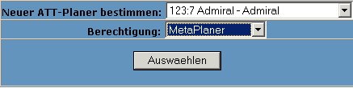

Funktionsweise:
Der Att-Planer II unterteilt sich in drei Bereiche:
1) Die AttPlaner:
Die Attplaner übernehmen die Planung und Koordination des ATTs. Sie
sorgen dafür, daß die Scans erstellt und gespeichert werden, daß die richtigen Spieler das
richtige Ziel auswählen und Planen den Att ein (Datum und Uhrzeit) und geben das Ziel frei, damit
die Spieler Ihre Flotten einchecken können!
2) Die ATT-Planer Liste:
Die Aufstellung aller Ziele. Hier können die Spieler Ihre Flotten einchecken und sehen den Status des Atts.
3) Die Ziel Erfassung:
Ihr kann jeder Spieler ein Ziel erfassen, was von einem Att-Planer eingeplant und freigegeben werden muß!
Configuration:
Für das Konfigurationsmenü sind min.
Vize-Admirals-Rechte notwendig!
| Zuerst erhält der Spieler eine Liste alle ATT-Planer.
Mit dem Button Loeschen kann die Berechtung zum ATT-Planer dem Spieler entzogen werden. Unter Verantwortlich ist die Berechtigung des Spielers sichtbar, welche ATTs der Planer / Spieler bearbeiten darf. |
 |
| Es gibt drei Berechtigungen: |
|
| In diesem Block kann ein neuer Att-Planer berechtigt
werden. Dazu den Spielernamen auswählen, die Berechtigung bestimmen und dann Auswaehlen drücken und dieses zu speichern. |
 |